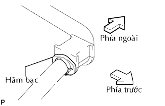
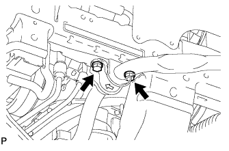
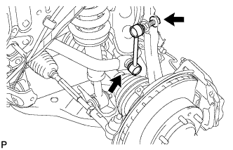

THANH ỔN ĐỊNH PHÍA TRƯỚC > LẮP |
| 1. LẮP THANH ỔN ĐỊNH PHÍA TRƯỚC |
Lắp thanh ổn đinh phía trước vào thân xe.
| 2. LẮP BẠC CỦA THANH ỔN ĐỊNH PHÍA TRƯỚC NO.1 |
|  |
Lắp 2 bạc.
| 3. LẮP GIÁ BẮT ỔN ĐỊNH PHÍA TRƯỚC |
|  |
Lắp 2 giá bắt bằng 4 bulông.
| 4. LẮP CỤM THANH NỐI THANH ỔN ĐỊNH TRƯỚC TRÁI |
|  |
Lắp cụm thanh ổn định trước trái bằng 2 đai ốc.
| 5. LẮP CỤM THANH NỐI THANH ỔN ĐỊNH TRƯỚC PHẢI |
| 6. LẮP BÁNH TRƯỚC |